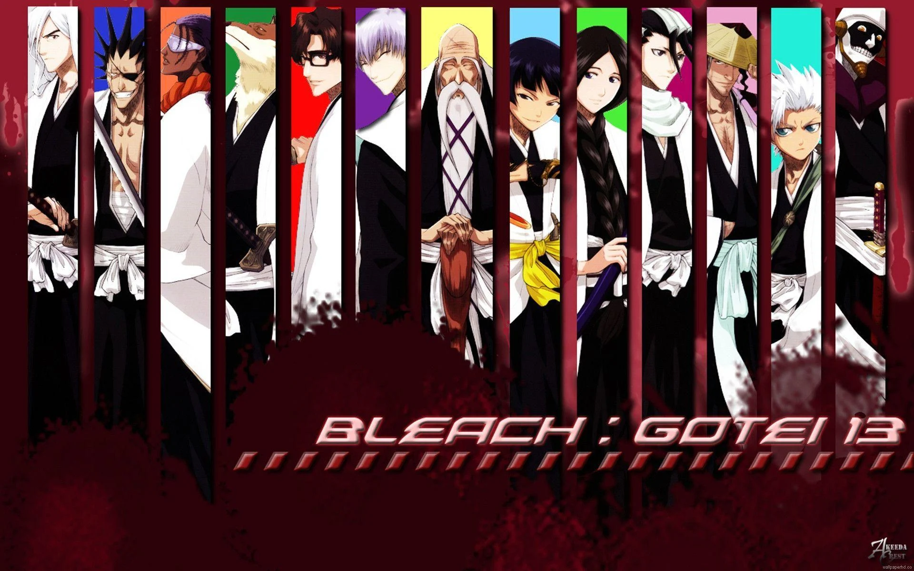

This page is for TRUE Otaku's and their otaku-ajacent peers
This page is also for those who are interested in dipping their toes into the anime pool. Or, you just so happen to stumble upon this page and the fact that you're still reading lets me know that you're intrigued at least. WHatever the reason, welcome. Feel free to scroll down.
I'll break them down by genre
Action
Here are some of my favorite action anime

Horror/Thriller
For first-timers, here's a good reference
Must-watch-horror-anime
An anime about a girl who suddenly was able to see spirits of all levels

 This, hands down, is most definately in my top 10 favorites. This show stars a creature that was given the oportunity to teach a middle school classroom a little more than academics.
This, hands down, is most definately in my top 10 favorites. This show stars a creature that was given the oportunity to teach a middle school classroom a little more than academics.